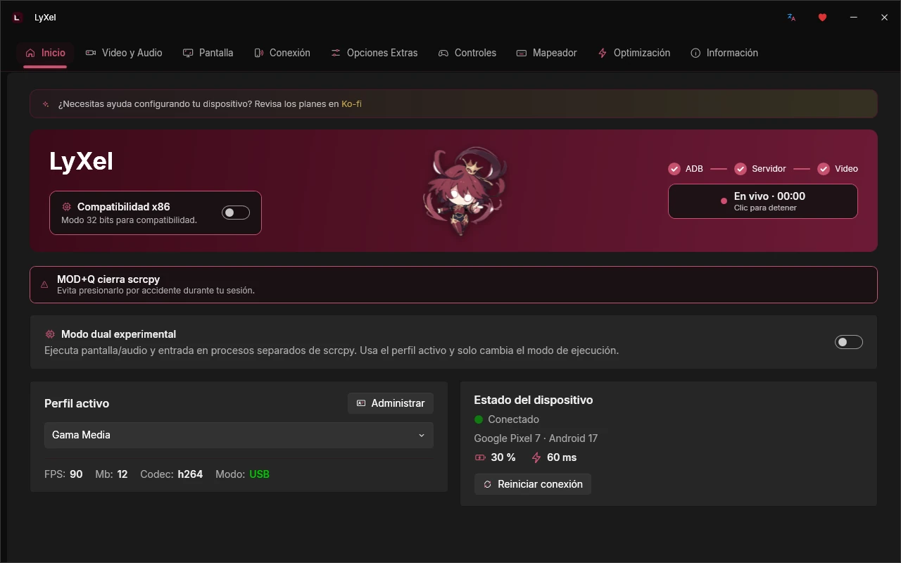
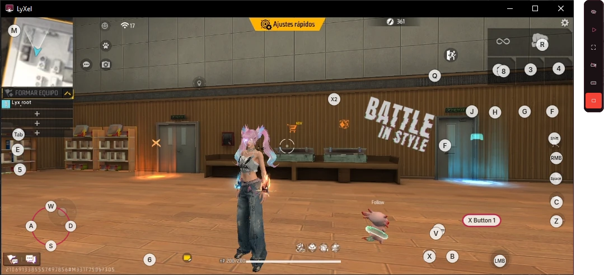
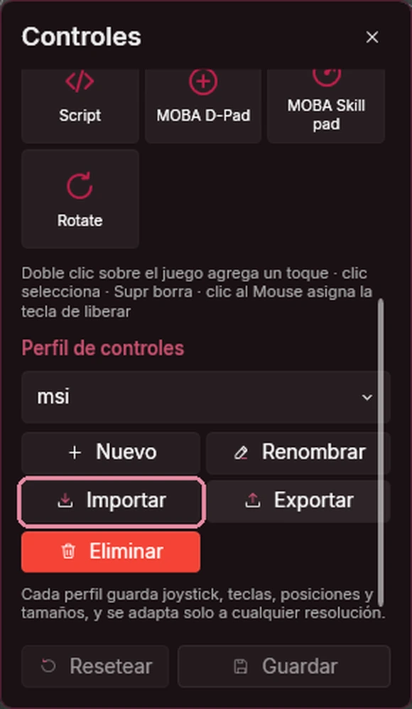
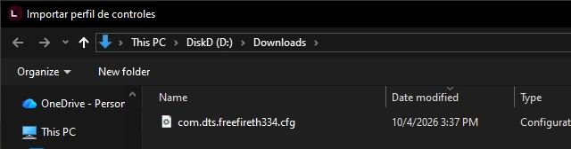
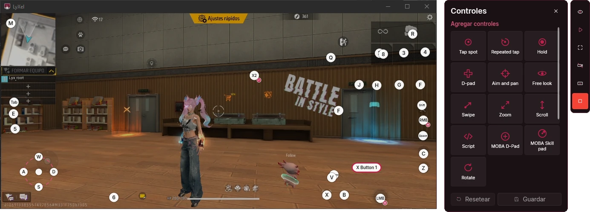

LyXel para Windows
Versión 1.8.1 · Windows 10 y 11 · 64 y 32 bits
Un solo instalador para los dos tipos de equipo. En uno de 32 bits, activa la Compatibilidad x86 en Inicio después de instalar.
129 MB · SHA-256 · ¿Algo no funciona? Usa la 1.6.4
LyXel es una aplicación gratuita para Windows que muestra y controla tu teléfono desde la computadora. Trae un Mapeador para jugar con teclado y mouse, y acepta los controles de BlueStacks y MSI.

Mapeador
Pon controles encima del juego y úsalos con el teclado y el mouse. El juego corre en tu teléfono, con tu cuenta; la PC solo lo muestra y le manda tus teclas.

Toque, mantener, joystick, apuntar, deslizar, zoom, scripts y controles MOBA.
El giro con el mouse se siente parejo al apuntar.
Elige cada cuánto se manda el movimiento de la cámara: 125, 250, 500 o 1000 Hz.
Míralos en pantalla mientras juegas, en la esquina que prefieras.
Cada perfil guarda teclas, posiciones y tamaños, y se ajusta solo a cualquier resolución.
Oculta los controles, pasa a pantalla completa o juega mirando el teléfono sin video.
Importar
Si ya tienes tus teclas acomodadas en tu emulador, no empieces de cero.
BlueStacks y MSI guardan los esquemas en la carpeta Engine\UserData\InputMapper\UserFiles de su instalación.



Recorrido
Así se ve LyXel 1.8.1. Elige una sección.
Elige el teléfono y el perfil, y empieza con un clic.
Funciones
Asistente para Android 11 o superior y reconexión en un clic.
De gama baja a máxima calidad. Crea, importa y exporta los tuyos.
Limpia caché, libera procesos y quita al juego las restricciones de batería.
Actívalos por separado y usa el modo UHID para que el teléfono los reconozca como propios.
Guarda los FPS, la latencia y el uso del equipo de cada sesión y compáralas.
Usa cualquier tecla como MOD y deja Ctrl y Alt libres para el juego.
Juega en una pantalla aparte, con la resolución y el DPI que elijas.
Español, English, Português y Deutsch.
El modo de compatibilidad la deja funcionar en equipos de 32 bits.
Comparativa
LyXel usa scrcpy como motor y le suma lo que hace falta para jugar y configurar sin comandos.
| Función | scrcpy | LyXel |
|---|---|---|
| Cómo se usa | Comandos en la terminal | Interfaz gráfica en cuatro idiomas |
| Mapeador para juegos | No incluye | Editor de controles al estilo emulador |
| Controles de BlueStacks o MSI | No los lee | Los importa en un clic |
| Tecla de atajos (MOD) | Solo Ctrl, Alt o Super, con un comando | Cualquier tecla, desde la aplicación |
| Configuración | Parámetros cada vez que lo abres | Perfiles listos y los tuyos |
| Conexión sin cable | Comandos de adb | Asistente y reconexión en un clic |
| Optimización del teléfono | No incluye | Limpieza y ajustes para jugar |
| Rendimiento | FPS en la consola | FPS y latencia en pantalla, y benchmarks guardados |
scrcpy es un proyecto de Genymobile. Si te sirve, dale una estrella en GitHub.
Novedades
Descargar
scrcpy y ADB vienen incluidos. No tienes que instalar nada más.
Versión 1.8.1 · Windows 10 y 11 · 64 y 32 bits
Un solo instalador para los dos tipos de equipo. En uno de 32 bits, activa la Compatibilidad x86 en Inicio después de instalar.
129 MB · SHA-256 · ¿Algo no funciona? Usa la 1.6.4
Versión 1.0.3 · x64
Espejo y control de tu Android en Linux, con todo incluido. Esta edición no trae el Mapeador.
Extrae el paquete y ejecuta bash instalar.sh. Guía de instalación
En Xiaomi activa también Depuración USB (ajustes de seguridad).
Requisitos
Historial
Todas siguen disponibles en GitHub.
Preguntas
Sí. Es gratuita para uso personal.
No. Solo activa la depuración USB. El juego corre en tu teléfono y LyXel lo muestra en la PC.
Sí. En el editor de controles pulsa Importar y elige el archivo .cfg de tu emulador.
Sí. En Conexión hay un asistente para conectar por Wi-Fi con Android 11 o superior.
Con los que corren en tu teléfono. Está pensado para juegos de disparos como Free Fire, y sirve para cualquier juego táctil.
Sí, la edición para Linux 1.0.3. Muestra y controla tu teléfono, pero no trae el Mapeador.
LyXel incluye componentes de otros autores, cada uno con su licencia: scrcpy de Genymobile (Apache 2.0, versión modificada), Android SDK Platform-Tools de Google (Apache 2.0), FFmpeg y libusb (LGPL 2.1 o posterior), libiconv (LGPL 2.1), SDL3 y zlib (zlib), winpthreads, WPF-UI con Fluent UI System Icons, CommunityToolkit.Mvvm, ini-parser y .NET (MIT), y la fuente Inter (SIL Open Font License 1.1).
El robot de Android se reproduce o modifica a partir de trabajo creado y compartido por Google, y se usa según los términos de la licencia Creative Commons Atribución 3.0.
Android es una marca de Google LLC. Free Fire es una marca de Garena. BlueStacks y MSI App Player pertenecen a sus respectivos dueños. LyXel es un proyecto independiente y no está afiliado a ninguno de ellos.